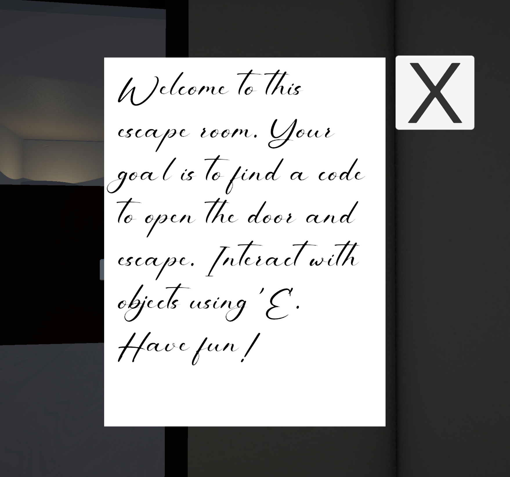

Escape Room - Immersive Storytelling
In jaar 2 periode 4 van mijn studie bij CMD, heb ik de keuzemodule 'Immersive Storytelling' gevolgd. Voor deze module heb ik een escape room ontworpen en gebouwd in Unity.
Dit was de eerst keer dat ik alles zelf heb gemaakt, van de code tot de 3D models. In het begin was het vrij moeilijk, omdat ik nog geen ervaring had met Blender.
Ook wist ik niet precies waar ik moest beginnen. Ik heb veel van mijn vorige kennis gebruikt en gecombineerd met de kennis die ik heb opgedaan tijdens de lessen van deze module.
Ik begon met het verhaal te maken van de game. Dit zorgde ervoor dat ik duidelijk had welke objecten en interacties ik nodig had voor mijn game.
Daarna ben ik begonnen met de objecten daadwerkelijk te maken in Blender en te animeren in Unity. Samen met een leesbaar briefje, animaties, geluiden en objecten heb ik een klein verhaal beleefbaar kunnen maken in deze escape room.
Ik was heel trots op dit eindresultaat, omdat ik maar 2 weken had om alles te maken. Ik heb veel geleerd tijdens dit project en een hele trotse 8 gekregen!
Wil je het zelf spelen? Klik dan op deze link. Escape Room - Immersive Storytelling

